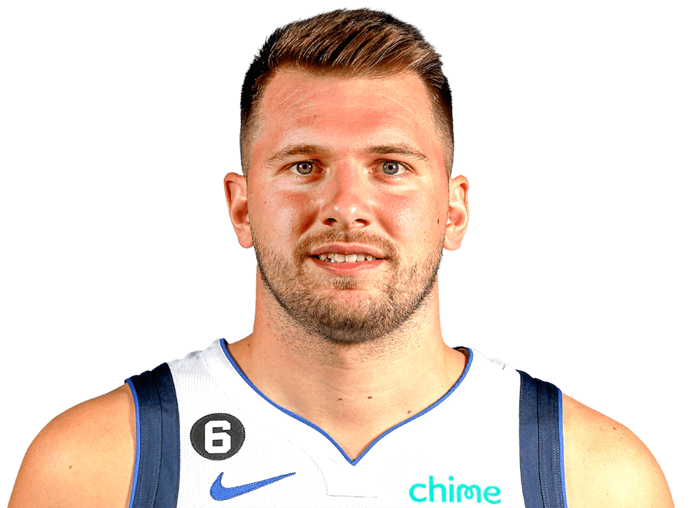

Dallas Mavericks

Dallas Mavericks (pogosto imenovani tudi Mavs) so ameriška profesionalna košarkarska ekipa s sedežem v Dallasu. Mavericks tekmujejo v Nacionalni košarkarski zvezi (NBA) kot član zahodne konference jugozahodne divizije. Ekipa svoje domače tekme igra v American Airlines Centru, ki si ga deli z ekipo Nacionalne hokejske lige Dallas Stars. Skozi osemdeseta leta prejšnjega stoletja so bili Mavericks večna ekipa v končnici, ki sta jo vodila All-Stars Rolando Blackman in Mark Aguirre. Ekipa se je v devetdesetih letih prejšnjega stoletja borila in vstopila v obdobje obnove. Leta 1998 se je usoda franšize drastično spremenila s prevzemom Dirka Nowitzkega, ki je postal temelj najuspešnejšega obdobja v zgodovini franšize, saj je ekipo popeljal do prvega in edinega naslova prvaka lige NBA leta 2011. Mavericksi so kasneje vstopili v fazo obnove. na koncu slavne kariere Nowitzkega. V treh zaporednih letih od 2017 do 2019 so zgrešili končnico, nato pa se je Nowitzki po svoji rekordni 21. sezoni z Dallasom upokojil. Pod vodstvom novinca leta 2019 Luke Dončića so se Mavericks leta 2020 vrnili v končnico in leta 2022 prvič po prvenstvu leta 2011 dosegli finale zahodne konference. Februarja 2020 so Mavericksi razprodali svojo rekordno 815. zaporedno igro lige NBA, ki sega v 15. december 2001. Niz razprodaj, ki vključuje 67 tekem končnice, je trenutno najdaljši v severnoameriških prvoligaških športih. Trenutno so Dallas Mavericks v lasti investitorja Marka Cubana. Od prve sezone Mavericks 1980–81 so Mavericks osvojili štiri naslove divizije (1987, 2007, 2010, 2021), dva konferenčna prvenstva (2006, 2011) in eno prvenstvo NBA (2011).
Trenutna ekipa

Po sezoni 17. junija 2021 je dolgoletni glavni trener Rick Carlisle po 13 sezonah odstopil s položaja glavnega trenerja. Sezona 2021–22 je prva sezona po sezoni 2004–05 brez dolgoletnega generalnega direktorja Donnieja Nelsona, saj je napovedal svoj odhod iz ekipe 17. junija 2021, dan pred sporazumnim razhodom Ricka Carlisla z ekipo. Carlisle in Nelson sta bila del šampionske ekipe Mavericksov v sezoni 2010–2011, Nelson pa je bil del ekipe v sezoni 2005–06, ki je prišla do finala lige NBA 2006. 28. junija 2021 je bil Jason Kidd, igralec prvenstvene ekipe 2010–11, najet kot glavni trener ekipe. Pod Kiddom so Mavericksi sezono 2021–22 končali z rezultatom 52–30, kar jim je prineslo četrto mesto v zahodni konferenci. Mavericks so osvojili svojo prvo serijo končnice po šampionski sezoni 2011, tako da so v prvem krogu končnice lige NBA 2022 premagali Utah Jazz s 4–2. Mavericksi so dobili dve tekmi brez Dončića zaradi poškodbe. Mavericksi so se nato pomerili s Phoenix Suns, ki so v redni sezoni zmagali na 64 najboljših tekmah lige. Po zaostanku s 3–2 je zvezdnik Mavericksov Luka Dončić dejal: "Vsakdo se obnaša trdo, ko je gor." [68] Mavericks so zmagali v naslednjih dveh tekmah in napredovali v svoj prvi finale zahodne konference po letu 2011. V igri 7 je Mavericks so premagali Sunse za 33 točk, v nekem trenutku pa so imeli 46 točk prednosti. Jalen Brunson je izbruhnil kot zvezda ob Spencerju Dinwiddieju in Dončiću, s povprečjem 23 točk v prvih dveh serijah.